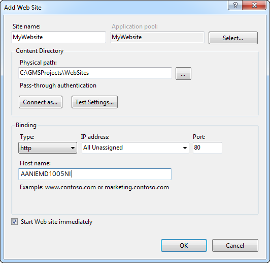
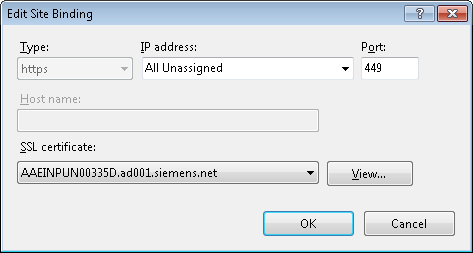
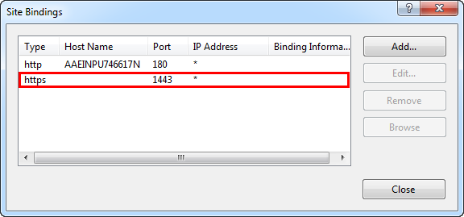
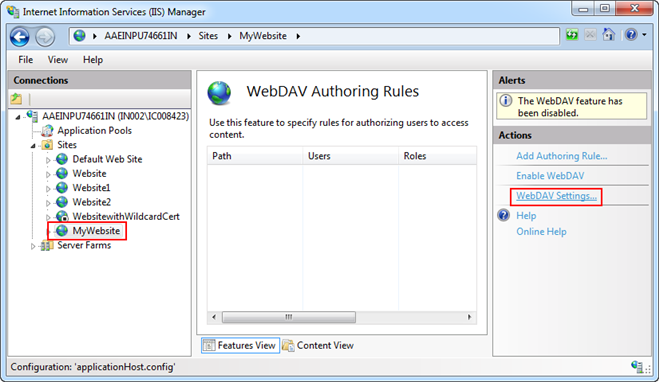
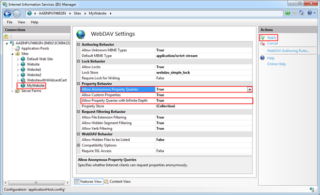

Create a New Website or Edit an Existing Website in IIS
If a website is not available on the third-party machine, you must create one. If a website already exists, you must edit it.
- You are on the third-party machine.
- If there is already an existing website, skip steps 2 to 6.
To create a new website, proceed with step 2. - Click Start and type IIS in the Search programs and files field.
- Click IIS Manager to open the Internet Information Services (IIS) Manager.
- Right-click the Sites node and select Add Web Site.
- In the Add Web Site dialog box that displays, add the following parameters:
- Site name
- Physical path
- Hostname
- Http port
- Click OK.
- A website is created.

- In the Sites tree, select the website.
- From the Actions pane, click Bindings.
- In the Site Bindings dialog box, click Add.
- In the Edit Site Binding dialog box, do the following:
a. Select https from the Type drop-down list.
b. Enter the Port number.
c. From the SSL certificate drop-down list, select a SSL certificate. 
- Click OK.
- Click Close.

- Binding is successful and the website is configured.
- Select Sites > [Website node] for which you want to enable the WebDAV Authoring Rules and double-click WebDAV Authoring Rules.

- In the Actions pane, click WebDav Settings.

- Set the following two properties as True and click Apply.
- Allow Anonymous Property Queries
- Allow Property Queries with Infinite Depth

- The changes are saved successfully.